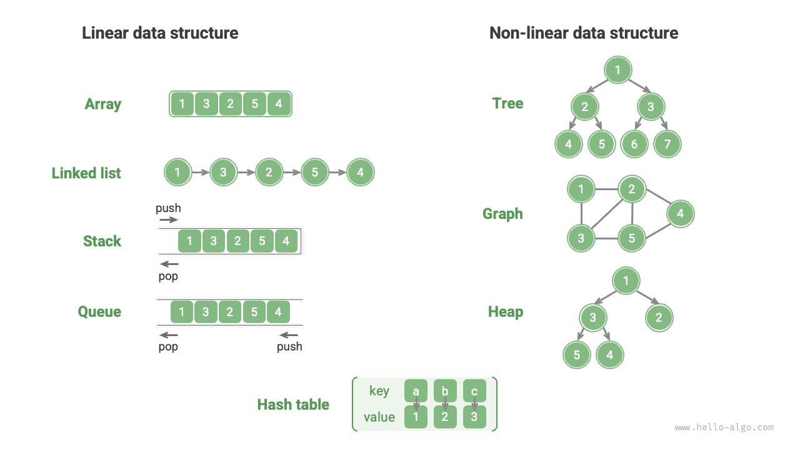
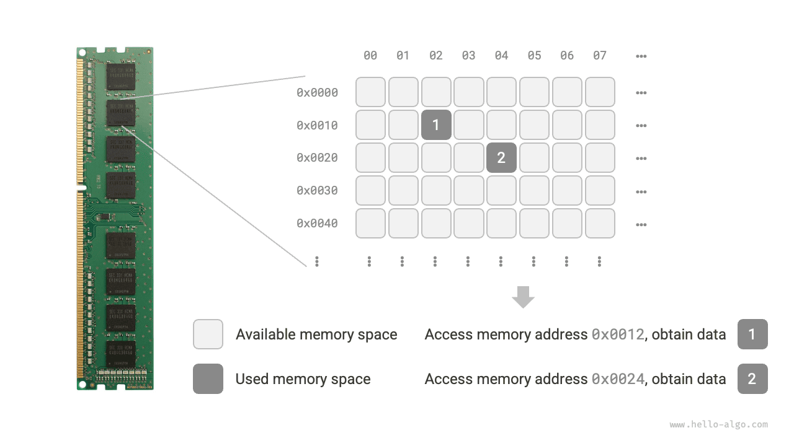
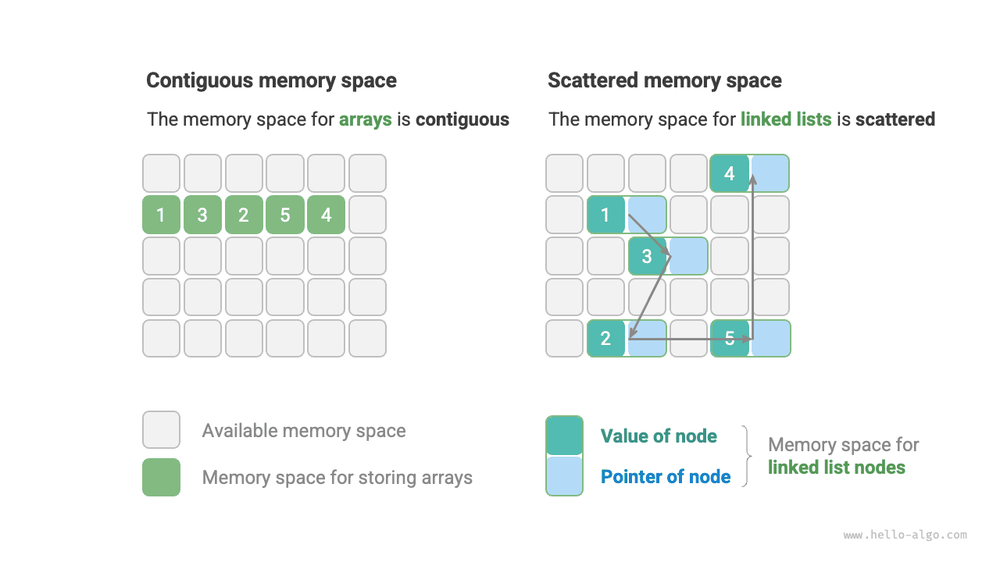

بنى البيانات
تصنيف بنى البيانات
تشمل بنى البيانات الشائعة المصفوفات والقوائم المترابطة والمكدسات والطوابير وجداول التجزئة والأشجار والأكوام والرسوم البيانية. ويمكن تصنيفها من بعدين: «البنية المنطقية» و«البنية الفيزيائية».
البنية المنطقية: خطية وغير خطية
تكشف البنية المنطقية عن العلاقات المنطقية بين عناصر البيانات. ففي المصفوفات والقوائم المترابطة تُرتَّب البيانات بترتيب معين يعبّر عن علاقات خطية بين العناصر؛ وفي الأشجار تُرتَّب البيانات هرمياً من الأعلى إلى الأسفل بما يعكس علاقات بين الأب والسليل؛ أما الرسوم البيانية فتتكوّن من عقد وأضلاع تعكس علاقات شبكية معقدة.
وكما يوضح الشكل أدناه، يمكن تقسيم البنى المنطقية إلى فئتين كبيرتين: «الخطية» و«غير الخطية». فالبنى الخطية أكثر بداهة، إذ تدل على أن ترتيب البيانات في العلاقات المنطقية خطي؛ أما البنى غير الخطية فعلى العكس من ذلك، إذ يكون ترتيبها غير خطي.
- بنى البيانات الخطية: المصفوفات، والقوائم المترابطة، والمكدسات، والطوابير، وجداول التجزئة، حيث تكون بين العناصر علاقة تسلسلية واحد-لواحد.
- بنى البيانات غير الخطية: الأشجار، والأكوام، والرسوم البيانية، وجداول التجزئة.
ويمكن تقسيم بنى البيانات غير الخطية كذلك إلى بنى شجرية وبنى شبكية.
- البنى الشجرية: الأشجار، والأكوام، وجداول التجزئة، حيث تكون بين العناصر علاقة واحد-إلى-متعدد.
- البنى الشبكية: الرسوم البيانية، حيث تكون بين العناصر علاقة متعدد-إلى-متعدد.

البنية الفيزيائية: متجاورة ومتناثرة
عند تشغيل برنامج خوارزمية، تُخزَّن البيانات التي يعالجها أساساً في الذاكرة. ويوضح الشكل أدناه شريحة ذاكرة في حاسوب، حيث يمثل كل مربع أسود فضاءً من الذاكرة. ويمكننا تخيّل الذاكرة كجدول بيانات Excel ضخم، إذ تستطيع كل خلية تخزين قدر معين من البيانات.
يصل النظام إلى البيانات في الموقع المستهدف عبر عناوين الذاكرة. وكما يوضح الشكل أدناه، يخصّص الحاسوب رقماً لكل خلية في جدول البيانات وفق قواعد محددة، بما يضمن أن يكون لكل فضاء ذاكرة عنوان ذاكرة فريد. وبهذه العناوين يستطيع البرنامج الوصول إلى البيانات في الذاكرة.

تجدر الإشارة إلى أن تشبيه الذاكرة بجدول بيانات Excel ليس إلا تشبيهاً مبسّطاً. إذ إن عمل الذاكرة الفعلي أعقد من ذلك بكثير، ويرتبط بمفاهيم مثل فضاء العناوين وإدارة الذاكرة وآليات ذاكرة التخزين المؤقت (cache) والذاكرة الافتراضية والذاكرة الفيزيائية.
الذاكرة مورد مشترك بين جميع البرامج. وعندما يشغل برنامج ما كتلة من الذاكرة، فعادةً ما يتعذّر على برامج أخرى استخدامها في الوقت نفسه. لذلك تُعدّ موارد الذاكرة اعتباراً مهماً في تصميم بنى البيانات والخوارزميات. على سبيل المثال، ينبغي ألا يتجاوز ذروة استهلاك خوارزمية ما للذاكرة ما تبقى من ذاكرة حرة في النظام؛ وإذا لم تتوفر كتل ذاكرة كبيرة متجاورة، فيجب أن تكون بنية البيانات المختارة قابلة للتخزين في فضاءات ذاكرة متناثرة.
وكما يوضح الشكل أدناه، تعكس البنية الفيزيائية طريقة تخزين البيانات في ذاكرة الحاسوب. ويمكن تقسيمها إلى تخزين في مساحة متجاورة (المصفوفات) وتخزين في مساحة متناثرة (القوائم المترابطة). وعلى المستوى المنخفض، تحدّد البنية الفيزيائية كيفية الوصول إلى البيانات وتحديثها وإدراجها وحذفها. وتُظهر هاتان البنيتان الفيزيائيتان خصائص متكاملة من حيث الكفاءة الزمنية والكفاءة المكانية.

وتجدر الإشارة إلى أن جميع بنى البيانات تُنفَّذ استناداً إلى المصفوفات أو القوائم المترابطة أو مزيج منهما. فمثلاً يمكن تنفيذ المكدسات والطوابير باستخدام المصفوفات أو القوائم المترابطة؛ أما تنفيذ جداول التجزئة فقد يشمل المصفوفات والقوائم المترابطة معاً.
- يمكن تنفيذها استناداً إلى المصفوفات: المكدسات، والطوابير، وجداول التجزئة، والأشجار، والأكوام، والرسوم البيانية، والمصفوفات، والموترات (مصفوفات بأبعاد $\geq 3$)، وغيرها.
- يمكن تنفيذها استناداً إلى القوائم المترابطة: المكدسات، والطوابير، وجداول التجزئة، والأشجار، والأكوام، والرسوم البيانية، وغيرها.
وبعد التهيئة، يمكن للقوائم المترابطة تعديل طولها أثناء تنفيذ البرنامج، لذا تسمى أيضاً «بنى بيانات ديناميكية». أما المصفوفات فلا يمكن تغيير طولها بعد التهيئة، لذا تسمى أيضاً «بنى بيانات ثابتة». وتجدر الإشارة إلى أن المصفوفات يمكنها تغيير طولها بإعادة تخصيص الذاكرة، وبذلك تحتفظ بقدر محدود من المرونة.
إذا وجدت صعوبة في فهم البنية الفيزيائية، فيُنصح بقراءة الفصل التالي أولاً، ثم العودة إلى هذا القسم لمراجعته.